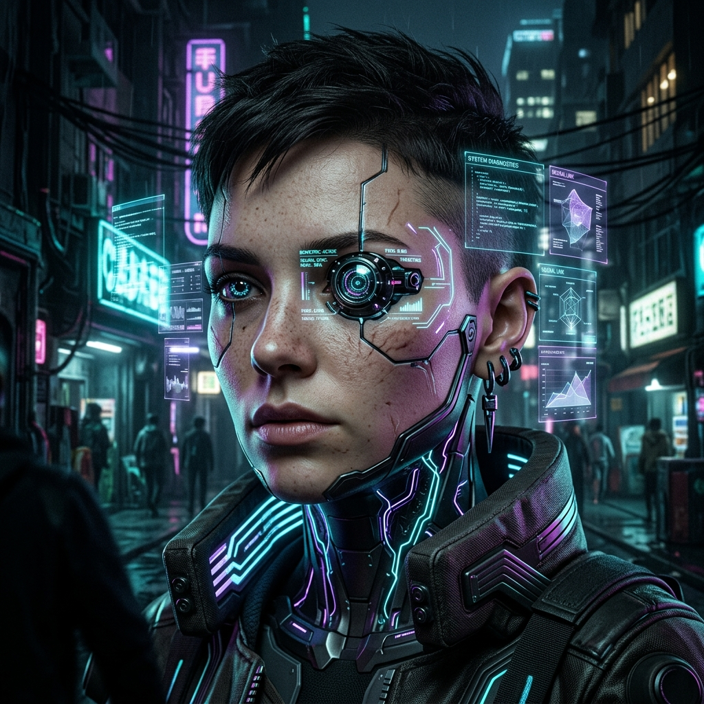
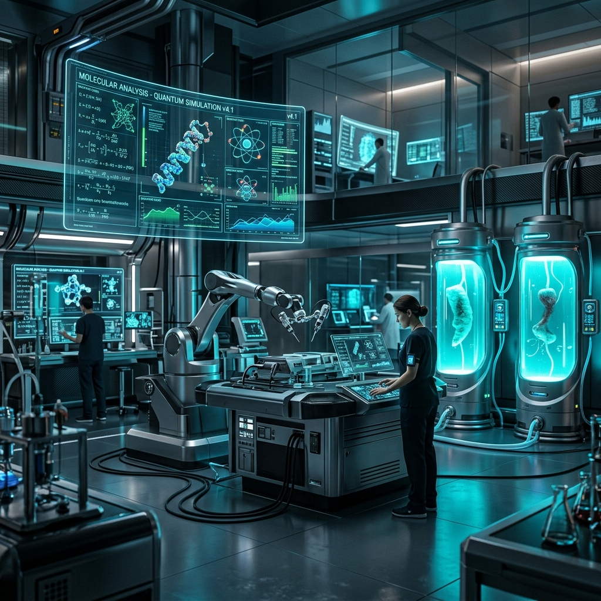
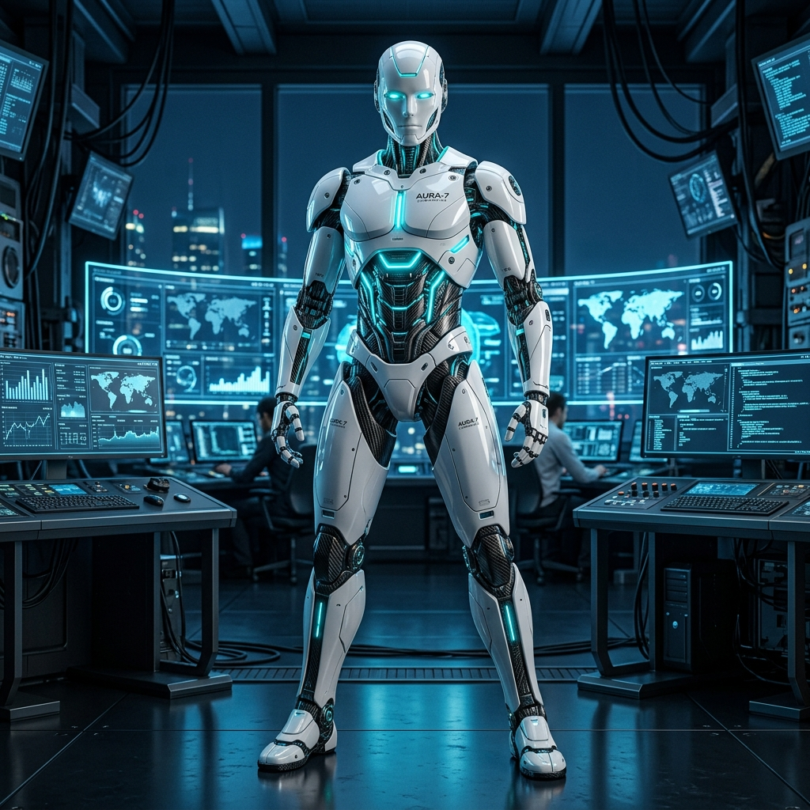
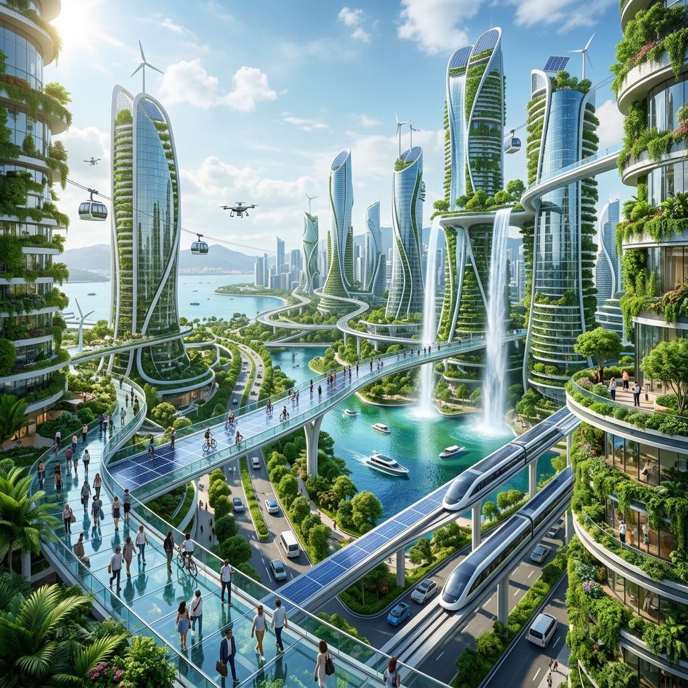
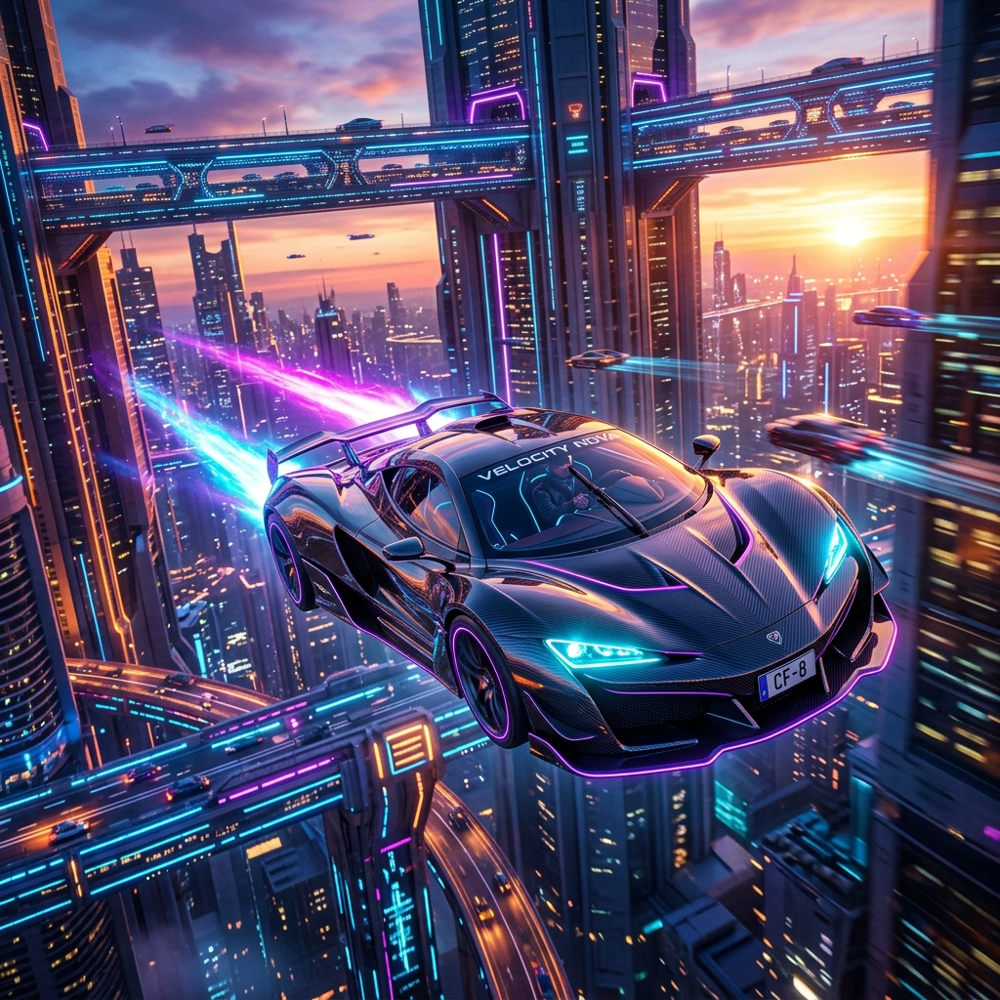

THE FUTURE IS
NO LONGER
HUMAN.
Experience the next evolutionary leap. Deep neural engineering, quantum cybernetics, and human biological augmentation converge into a super-intelligent symbiosis.

CYBERNETIC TECHNOLOGY
Redefining human capability with spatial grids and sub-atomic biological processing modules.
Artificial Intelligence
Somatic cortex decision interfaces injecting immediate predictive AI cognitive matrices straight to raw optical lobes.
Advanced Robotics
Physical exoskeletal linkages crafted from carbon fibers and responsive liquid micro-hydraulics for augmented muscle strength.
Quantum Computing
Miniature biological-quantum nodes running trillions of sub-atomic calculations inside portable neural augment frameworks.
Neural Engineering
Integrating sub-dermal mesh links that double cortical node speeds and map human synapses directly into cloud grids.
Cyber Security
Advanced quantum firewall matrix shields, instantly blocking cerebral data intrusions and malicious rogue netrunners.
Space Technology
Connecting deep-space quantum laser relays directly to orbit nodes, offering high speed telemetric syncing in real time.
THE HISTORICAL EVOLUTION
How physical and digital implants transformed human civilization from tools to standard biological singularity.
AI Revolution
Advanced synthetic computing matrices linked directly into municipal data hubs, phasing out classical programmatic script architectures.
Human-AI Convergence
Direct interface networks established. Synthetic neural arrays translate cerebral thoughts into spatial models at the speed of synapses.
Neural Integration
Subdermal neural sockets become commercial standards, allowing real-time high-fidelity knowledge downloads and memories syncing.
Cyborg Augmentation
Exoskeletal structures and biometric sensory systems replace conventional medical limbs as universal upgrades within smart metropolis bounds.
Digital Evolution
Singularity achieved. Complete convergence between organic biology, biomechanical nodes, and global quantum supercomputing networks.
Connected Minds
AI Systems
Countries Integrated
Neural Accuracy
THE METROPOLIS GALLERY
Visual database entries displaying somatic hardware configurations and orbital blueprints.





FEEDBACK FROM THE COGNITIVE
Real reports submitted by organic cyber-augmented intelligence coordinators.
SECURE YOUR SYNAPSE
COHERENCE INDEX
Initialize your direct somatic integration bridge. Deploy real-time neural data firewall nodes and unlock augmented human capacity thresholds today.